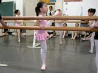
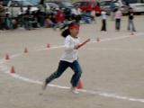
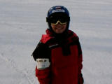
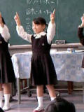
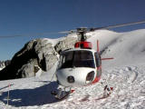
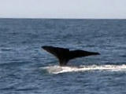
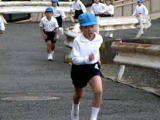

由起子のビデオ(No141-150) |
| 2006年7月16日撮影 (1823KB) ピアノの発表会。モーツァルトのきらきら星変奏曲より♪ 長い長い曲をホントによく頑張りましたね。堂々としていて、 やさしい感じや力強い感じ、星が流れるようなイメージが 感じられました。 完全に親バカですが・・・ユキちゃん、上手だったよ。。。！ |
|
 |
2006年6月28日撮影 (567KB) バレエの見学時。身体をもっとやわらかくしなくちゃね。。。 １２月には発表会があります。 |
| 2006年5月5日撮影 (514KB) クラブメッド・カビラにて。ミニクラブショーでのひとこま。 この時期の石垣島はオススメです。気候も良いし、 海やプールも心地良い。毎年来たいよー！ |
|
 |
2006年4月29日撮影 (404KB) ファミリー運動会でのひとこま。リレーに参加しているようです。 アットホームな楽しい運動会でしたね。 |
 |
2006年3月28日撮影 (597KB) 初めてのスキー。CLUB MEDサホロでミニクラブに入り、スキーを 教えてもらいました。また絶対来たい！！まどかちゃんと再会したいよ～。 |
 |
2006年2月23日撮影 (375KB) 小学校の生活発表会。踊りは由起子のお得意分野。ニコニコ笑顔で 頑張りました。あっと言う間に１年生も終わり。もうすぐ２年生だね。 |
| 2006年1月4日撮影 (411KB) 毎日練習した「縄跳び」。自主的に楽しんで練習するとグングン上達 するのです。今ではめちゃ上手になりましたよ。。。 |
|
 |
2005年12月28日撮影 (1407KB) FOXグレイシャーをヘリコプターから眺めました。。 お天気がとっても良く、一面の銀世界は神秘的で、美しいのだ！ 氷河を眺めるだけじゃなく、氷河の上に降り立ちました。 |
 |
2005年12月26日撮影 (742KB) パパの勤続20周年特別休暇を利用して、年末年始にニュージーランドへ 行ってきました＜12/23～1/6まで＞。ここは「カイコウラ」。 ホエール（クジラ）ウォッチングを楽しみながら、船酔いでゲロゲロ・・・・・ |
 |
2005年12月7日撮影 (501KB) 小学校の持久走大会。由起子の姿をなかなか見つけることができず･･･、 新しくなったビデオに悪戦苦闘でした。 ユキちゃん、21位でした。よく頑張ったね。 |